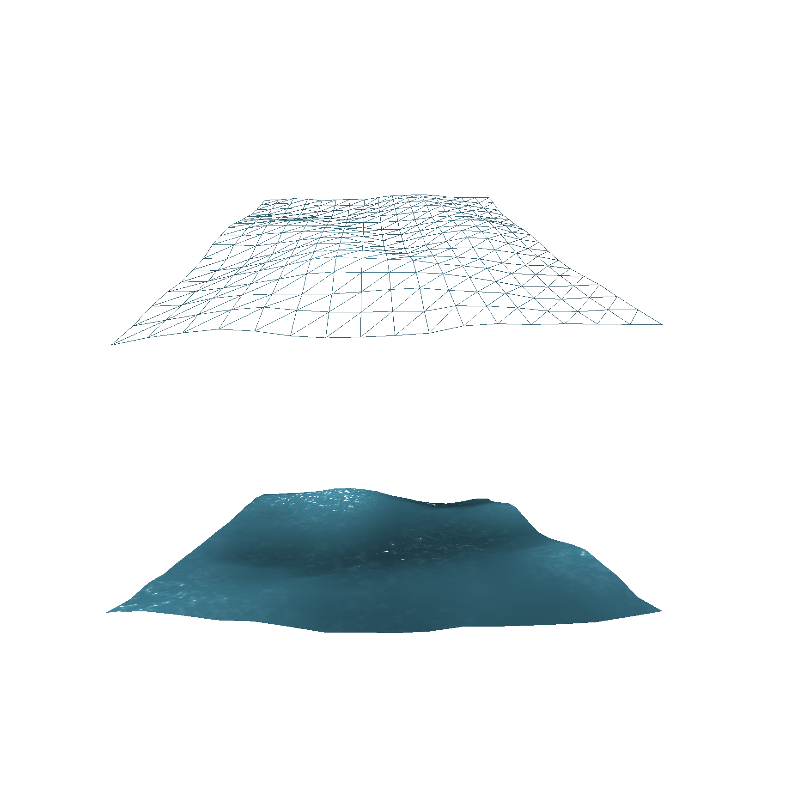

Water Simulation
Smoothed Particle Hydrodynamics
Adam Alsegård, Benjamin Wiberg, Emil Juopperi, Jonathan Grangien, Simon HedlundDisplacement
Tall Cells
Particles
Navier-Stokes equations
Describes the motion of a fluid
Applying Newton’s second law to fluid dynamics
-
Conservation of mass
$\frac{\partial {\rho}}{\partial{t}} + \nabla \cdot (\rho \textbf{v}) = 0$ -
Conservation of momentum
$\rho (\frac{\partial \textbf{v}}{\partial{t}} + \textbf{v} \cdot \nabla \textbf{v} ) = - \nabla p + \mu \nabla^2\textbf{v} + \rho \textbf{g}$
Pressure-, viscosity- and external forces
Smoothed Particle Hydrodynamics (SPH)
-
Calculation of a property $A$ at position $\textbf{r}$:
$A_S(\textbf{r}) = \sum_{j}(m_j\frac{A_j}{\rho_j} W(\textbf{r} - \textbf{r}_j, h))$ - $\textbf{f} = - \nabla p + \mu \nabla^2\textbf{v} + \rho \textbf{g}$
Boundary conditions
- Constraint-based
- Force-based
- Unpredictable boundaries
Constraint-based

Constraint-based
Constraint-based
Constraint-based
Force-based
Force-based
Force-based
Force-based
Unpredictable boundaries
Unpredictable boundaries
Unpredictable boundaries
Unpredictable boundaries
Unpredictable boundaries
Unpredictable boundaries
Unpredictable boundaries
Implementation
- Matlab
- C++
-
OpenCL
- Multi-core computing
- CL-GL shared memory
Spatial partitioning
- Uniform grid
-

Smoothing kernels
Rendering
- Individual rendering
- Screen Space Rendering with Curvature flow